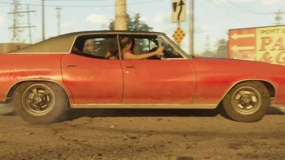
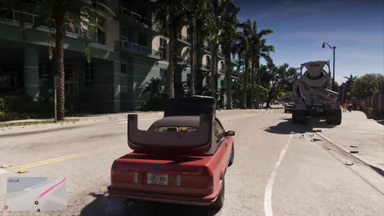
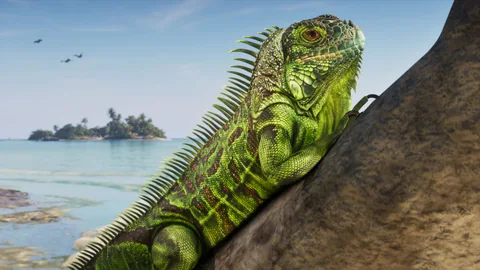

Des succès sur Xbox
La fiche Xbox du jeu annonce des succès, sans en donner le nombre ni les points.
Officiel1
Trophées et succès · GTA VI
La liste des trophées PlayStation et des succès Xbox n’est pas encore publiée. Voici ce qu’on sait au 4 octobre 2026, ce que comptait GTA V, et ton suivi, prêt à s’allumer avec la liste.
Chaque information dit d’où elle vient : boutique, règle de console, presse ou site de chasseurs de trophées. Aucune liste « attendue » n’est reprise : un trophée n’entrera ici que publié par PlayStation, Xbox ou Rockstar. Comprendre les statuts.
Ce qu’on sait
Au 4 octobre 2026
Ni PlayStation, ni Xbox, ni Rockstar n’ont publié la liste des trophées et succès de GTA VI : pas de nombre, pas de grades, pas de points, aucun nom. Les sites spécialisés, comme TrueAchievements et PlayStationTrophies.org, ont ouvert leur page et l’attendent.
La fiche Xbox du jeu annonce des succès, sans en donner le nombre ni les points.
Officiel1
Rockstar présente GTA VI comme une expérience solo ; la fiche PlayStation indique un joueur et un jeu hors ligne, sans parler des trophées.
Les règles de Microsoft limitent un jeu à 1 000 points de succès à sa sortie, répartis sur 10 à 100 succès. Le détail pour GTA VI n’est pas publié.
Officiel1
Sur PlayStation, les trophées ont quatre grades, et le platine se débloque quand on a tous les autres. Rien ne dit encore si GTA VI en aura un.
Identification communautaire1
Les grades
Les badges sont dessinés pour le site : ce ne sont pas les icônes des consoles.
Pour comparer
Les chiffres de GTA V, pour te faire une idée : ils ne disent rien de la liste de GTA VI.
Le platine, « Los Santos Legend » (« Légende de Los Santos » en français), demande tous les autres trophées.
Les trois trophées d’or sont réputés les plus longs : « Career Criminal » (100 % du jeu), « Solid Gold, Baby! » (70 médailles d’or) et « Above the Law » (rang 100 dans GTA Online).
Identification communautaire1
PowerPyx compte six trophées manquables, dont « Kifflom! » (toutes les missions d’Epsilon) et « Red Mist » (tous les Rampages) : au choix final, l’option C les garde accessibles.
Identification communautaire1
Les codes de triche y désactivaient les succès pour un temps, selon Rockstar.
Officiel1
Ton suivi
La liste arrivera ici dès sa publication par PlayStation, Xbox ou Rockstar. Chaque trophée aura son grade, ses points Xbox, sa condition officielle, s’il est manquable ou caché, et ta case « Obtenu », gardée sur ton appareil, avec le pourcentage et l’anneau de progression. Ceux qui demandent une méthode auront leur fiche pas à pas.
Ton suivi · Le squelette, prêt pour la liste
Quatre trophées de GTA V, pour voir la forme d’une ligne : le grade, le nom, la condition, et la case « Obtenu » qui restera sur ton appareil.
Solid Gold, Baby!GTA V
Obtenir 70 médailles d’or dans les missions et les activités.
Identification communautaire1
Kifflom!GTA VManquable
Terminer toutes les missions d’Epsilon ; manquable selon le choix final.
Identification communautaire1
La liste arrivera ici dès sa publication par PlayStation, Xbox ou Rockstar. Chaque trophée aura son grade, ses points Xbox, sa condition officielle, s’il est manquable ou caché, et ta case « Obtenu », gardée sur ton appareil, avec le pourcentage et l’anneau de progression. Ceux qui demandent une méthode auront leur fiche pas à pas.
Les filtres (grade, manquable, catégorie) et le suivi s’allument avec la liste.
Les filtres (grade, manquable, catégorie) et le suivi s’allument avec la liste.
Sources officielles
Rockstar, Sony et Microsoft ont présenté le jeu sans dire un mot de ses trophées.
GTA VI est présenté comme une expérience solo, le 19 novembre sur PS5 et Xbox Series X|S.
La fiche du jeu liste des succès, sans nombre ni points.

La fiche indique un joueur et le jeu hors ligne ; rien sur les trophées.

Environ 26 minutes de jeu capturées sur PS5, sans rien sur les trophées.

Le dossier parle de la carte, de la météo et de la faune ; rien sur les trophées.

Observations des joueurs
Les chasseurs de trophées guettent la liste. Voici ce qu’ils avancent, cité comme tel.
Questions ouvertes
Le suivi est prêt ; il lui manque la liste.
Non publié, pas plus que les points Xbox.
Attendu, mais pas confirmé.
Aucun mode en ligne n’est annoncé au lancement.
On le saura avec la liste.
Ils arriveront avec la liste, dans chaque langue de la console.
Chaque réponse rejoindra la page avec sa source dès qu’elle sera publiée.
Outils du site
En attendant la liste, suis déjà ce que le site te permet de cocher.
À la sortie, chaque trophée aura sa case « Obtenu » : coche-la, son badge s’allume et l’anneau se remplit.
Questions
Les questions qu’on tape dans un moteur de recherche, avec des réponses courtes et datées.
19 sources ouvertes
Chaque phrase de cette page renvoie à une source datée. Les pages ont été relevées le 4 octobre 2026 par moteur de recherche : leur ouverture directe était bloquée depuis l’atelier ce jour-là.
Page ou vidéo publiée par Rockstar (site GTA VI, Newswire, trailers, Extended Look), ou propos d’un responsable de Rockstar rapportés par un média nommé, avec la date.
Ce qu’une image ou une séquence officielle montre, sans texte de Rockstar pour le dire : un plan de trailer, une capture, un moment de l’Extended Look, avec le minutage quand il est connu.
Rapprochement fait par des joueurs, un wiki ou un site de fans (lieu réel, acteur, comté). Cité comme tel, jamais présenté comme confirmé.
Question sans réponse publiée : prix, achat, accès, rôle dans l’histoire. On l’écrit pour ne pas la deviner.
La fiche Xbox du jeu annonce un jeu solo, des succès Xbox et des sauvegardes dans le cloud, pour une sortie le 19 novembre 2026 ; ni nombre de succès ni points.
La fiche indique 1 joueur et un jeu hors ligne, avec un préchargement de 7 jours ; elle ne parle pas des trophées.
GTA VI est présenté comme une expérience solo, le 19 novembre sur PlayStation 5 et Xbox Series X|S ; la version en boîte est un code de téléchargement, disponible dès le 12 novembre pour le préchargement.
L’annonce des précommandes présente GTA VI comme une expérience solo, sur PS5 et Xbox Series X|S, sans parler des trophées.
Règle Xbox : à sa sortie, un jeu propose de 10 à 100 succès, pour 1 000 points au total.
La présentation d’environ 26 minutes, capturée sur PS5 : rien sur les trophées.
Compte rendu du dossier de Game Informer du 29 septembre 2026 : carte, régions, météo, faune ; rien sur les trophées.
Dans GTA V, on peut sauvegarder avec des codes de triche actifs, mais les succès sont désactivés pour un temps.
La page des succès de GTA VI existe mais n’en liste aucun : ils apparaîtront dès leur publication.
Les trophées ne sont pas encore sortis ; le site les attend à l’approche du lancement.
Rockstar n’a pas encore dévoilé la liste officielle ; les chiffres « attendus » de la page sont des estimations, non reprises ici.
La liste n’est pas publiée ; les sites de suivi notent qu’elle arrive en général quelques jours avant la sortie, avec les données des boutiques.
Quatre grades (bronze, argent, or, platine) ; le platine se débloque quand on a obtenu tous les autres trophées d’un jeu, et un jeu en a un au plus.
Chaque succès Xbox rapporte des points, qui s’additionnent dans le score du profil (Gamerscore).
Propos rapportés de Davy Jones, créateur brésilien invité par Rockstar : un platine difficile mais pas insurmontable, une centaine d’heures, entièrement en solo. Rien d’officiel, malgré le titre.
Jeu de base de GTA V : 51 trophées (1 platine, 3 or, 5 argent, 42 bronze) ; six trophées manquables ; les trois trophées d’or sont les plus longs.
La liste de base de GTA V sur PS5 et Xbox Series : 51 trophées et succès, dont le platine « Los Santos Legend ».
Avec les contenus ajoutés : 78 trophées, dont 34 en ligne et 21 cachés ; le platine s’appelle « Légende de Los Santos » en français.
Sur Xbox Series X|S, GTA V compte 77 succès pour 1 750 points, dont 50 succès et 1 000 points dans le jeu de base.
Ce qu’on ne fait pas. Aucune donnée issue des fuites de 2022 ou de 2026, aucune liste « attendue » des sites de fans, aucun nom de trophée inventé. Les statuts sont expliqués dans le Tuto.
Et après ?
Chaque fiche se complète avec le jeu : ce qu’on y trouve, ce qu’on y fait, ce que ça rapporte. Rien d’inventé d’ici là.